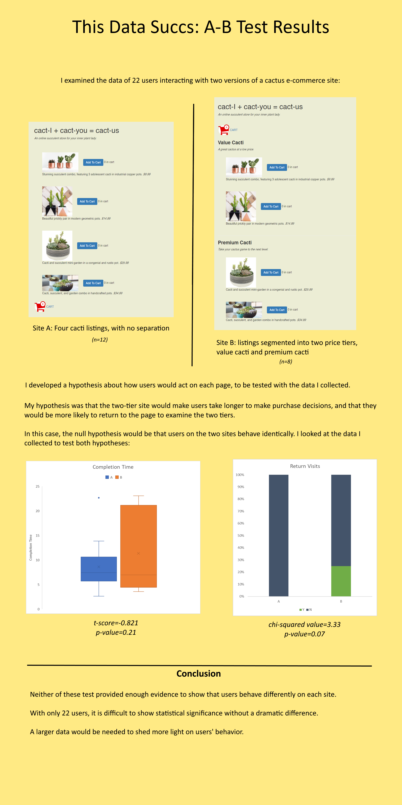

A/B testing is a method of comparing two versions of a product, which uses statistical analysis of users' behavior to evaluate the difference between the two variants. In this project, I performed an A/B test on two versions of a cactus e-commerce site. I wanted to test if a tiered pricing scheme changed users' behavior.
You can visit the site here. Refresh the page to see a different version!
My hypothesis was that a tiered pricing scheme would make users take longer to make purchase decisions. Additionally, I hypothesized that users might be unsure about what price tier they want, so they'd be more like to return to the listings once they reached the checkout page.
I collected Heroku logs from the activity of 22 users in my class, and used Python to perform analysis of the data, specifically using t- and chi-squared statistical tests.
I decided to present my results in an infographic to be more engaging:
Here are some of my takeaways from this project:
Thanks for reading!